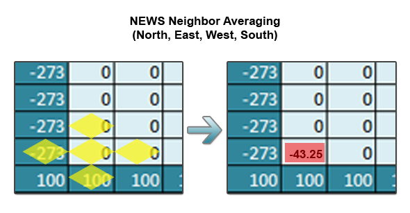
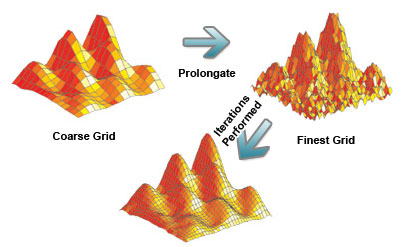

Before we begin the next part in this series, let’s review the stencil used for solving the heat equation.

A single iteration over the grid involves applying this stencil (taking the NEWS (North/East/West/South average) for every index in the inner grid. Let’s see how this looks sequentially in Python. This is known as Jacobi iteration and is the most basic type of solver for elliptic PDEs.
2
3
4
5
6
7
8
9
10
11
12
13
14
15
16
17
18
19
20
while True:
# Computes new values for the inner grid
for i in rows:
for j in cols:
new[i,j] = (grid[i-1,j]+grid[i+1,j]+grid[i,j-1]+grid[i,j+1])/4
# Computes the maximum difference between the old and new grid
maxdiff = 0.0
for i in rows:
for j in cols:
maxdiff = max(maxdiff, abs(new[i,j]-grid[i,j]))
# Exits the loop if converged
if maxdiff < epsilon:
break
# Copies the new grid into grid for the next iteration
grid = new.copy()
Looking at the above algorithm, we see that for each iteration of the main loop on an NxN grid we have to do (N-2)^2 computations (N-2 ignores the boundaries). O(N^2) type algorithms typically lend themselves well to parallelizing. However, I won’t just be parallelizing the Jacobi iteration – I’ll be using parallel multigrid and successive over relaxation methods.
I’m using the advanced techniques above to speed up the algorithm on large grids. I use large grids in a very general sense here – for the purpose of the discussion, a large grid is any grid that doesn’t converge in a reasonable amount of time for you. Both parallel and sequential Jacobi iteration work slowly on large grids. To examine why this is, let’s step through a small grid using Jacobi iteration.
First, traditional Jacobi iteration updates the new grid based entirely on values from the old grid. This provides a perfectly accurate result, but it takes N/2 iterations for the boundary values to affect the center of the grid. Intuitively you can see this is true because points only affect the points immediately next to them and in turn a large grid’s center will remain 0.0 for a long time. When the center finally is affected, it’s set to a highly dampened value due to the successive averaging that takes place while propagating (this effect can be seen more optimally on a large graph).
Let’s look at the Successive Over Relaxation algorithm and see the two ways in can help speed up convergence.
2
3
4
5
6
7
8
9
10
11
12
13
14
15
16
17
while True:
# Computes new values for the inner grid
# Notice that if i=1..n, j=1..n then
# every index updates using new North,West neighbors
for i in rows:
for j in cols:
tmp = grid[i,j]
new = omega * ((grid[i-1,j] + grid[i+1,j] + grid[i,j-1] + grid[i,j+1])/4)
+ (1-omega) * grid[i,j]
maxdiff = max(maxidff, abs(new-tmp))
grid[i,j] = new
# Exits the loop if converged
if maxdiff < epsilon:
break
First, an omega value is supplied which either overestimates or underestimates the Jacobi value of each point. Second, it updates points in-place based on a combination of old and new values (the new values bring the index closer to its final value than if only old values were consulted). SOR works by making each iteration overcorrect to ideally produce a better answer.
So while SOR alleviates part of the problem of slow propagation, it doesn’t reduce the number of iterations it takes for the edges to affect the center. On super large grids (think 10,000×10,000), it’s not just the slow propagation from the edges we need to worry about. On such a large grid, all points are sufficiently far enough apart to require a significant amount of time to affect each other.
Multigrid methods can alleviate this problem in a novel way by looking at the superfine grid in multiple levels of coarseness. To visualize this idea, I’m including an image I found in Google (I couldn’t find an author to attribute it to).
Looking at the grid and different quality levels is one thing, but how can this improve the speed of convergence? Multigrid methods perform iterations on the coarser grids and then prolongate these values down to the finer grids. Iterating over the coarser grids gets values quickly that are very rough, but very near the final results. Prolongating these values into the finer grids pushes every point closer to its final value (including the elusive center points). To demonstrate these ideas, I’ve modified an image from Lawrence Livermore National Laboratory’s website.

In the final segment, I’ll describe the implementation details of multigrid and SOR methods in Ada and how to parallelize them. I’ll also include some of the more beautiful visualizations I created in Mayavi.